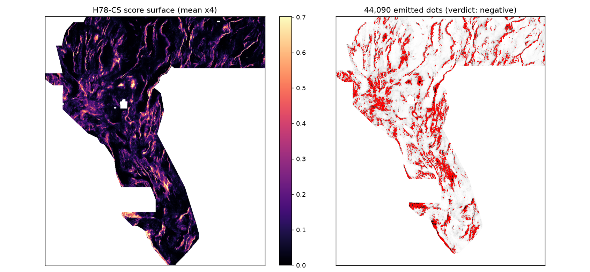

← Home (H78-A primary) · H78-MPC second candidate · This page is lane H78-CS (session 3, 2026-10-21): strike-following collinear support.
Core Values. Maximize P(Win) — a weekly slot is spent only on a preregistered holdout win; a measured negative that saves a slot is a win for the campaign. Own the Outcome — the gate, the replication and the duplicate-lane measurement below are all computed and published, not asserted.

Faults are continuous strands: integrating |Hnn|/|gn| (sigma=3 px, det_elev/rtp/depth_to_base_surf) along the visible-catalogue strike tangent over 1.1/3.1 km is a matched filter that should raise faint-strand SNR vs isolated texture; HGB on 103 H78-A + 15 path-integral features; greedy dots >=2.8 px, <=3 px flank removed.
Named non-fault mimic: Pleistocene Lake Lahontan shorelines/beach ridges (long range-front-parallel topographic lines without a magnetic/basement step); roads; bedrock strike ridges.
Preregistration (written before results): registry/preregistration_h78cs.json ·
Hypotheses ranked: research/h78cs_hypotheses.md · Code: src/gems78/collinear.py,
scripts/run_holdout_cs.py, scripts/build_submission_cs.py · Shared evaluator/writer
unmodified (vendor/gems57, sha256-pinned).
DTI = TPw/(TPw+0.2·FPw+0.8·FNw) with a 300 m max-credit kernel charges
0.2 per emitted pixel, so the optimum is binary sparse dots and a dot helps only if its credit exceeds ≈0.2·DTI
(0.0556 at 0.2778). The chain H19-5 solid (121,131 px, 0.1922) → D2.8 (44,090 dots on the same lines, 0.2600) →
H33 (exact 37,654-dot subset deleting every dot ≤2 px from the catalogue, 0.2778) changed no detector at all —
it removed redundant and near-catalogue mass. Beating 0.2778 therefore needs a better ranking of pixels by
true-fault probability (credit per dot ≈0.13 → ≈0.16 for ~0.32), validated on hide-and-recover holdout — which is
what this lane attempted and, measured below, did not achieve. Full argument: hypotheses page
and research/h78cs_hypotheses.md §0. Leaderboard figures in the prompt (0.4413 / 0.3195) are prompt claims,
not receipts re-verified here (leaderboard, login).
| Config (B3 flank, 44,090 dots) | HOLDOUT-DTI | 95% CI | Withheld |
|---|---|---|---|
CAND_CS|B3|44090 (103 + 15 collinear) | 0.1791 | [0.1609, 0.1961] | 11,321 |
CTRL_A2|B3|44090 (103, exact H78-A rerun) | 0.1826 | [0.1628, 0.2004] | 11,321 |
ABL_A0CS|B3|44090 (19 raw + 15 collinear) | 0.1634 | [0.1453, 0.1816] | 11,321 |
| paired Δ CAND − CTRL | -0.0035 [-0.0086, +0.0017] | ||
| far-truth stratum (>10 px from visible faults, 5,150 positives): CAND / CTRL / Δ | 0.0725 / 0.0778 / -0.0053 [-0.0102, -0.0005] | ||
| CAND_CS seed-30 replication (IR-78CS-01; cannot promote) | 0.1838 | [0.1628, 0.2048] | 11,342 |
| CTRL_A2 seed-30 replication | 0.1834 | [0.1622, 0.2049] | 11,342 |
| paired Δ seed 30 (CAND − CTRL) | +0.0004 [-0.0053, +0.0058] | ||
The control reproduces the shipped H78-A evidence to four decimals (B3 0.1826, B2 0.1586, B3@50k 0.1843), so the instrument is not the explanation: adding along-strike path integrals does not help this model — point-negative overall and significantly negative on far-from-catalogue truth, the stratum that most resembles live hidden faults. Score-surface Spearman ρ(CAND, CTRL) = 0.9520 on the seed-20 surfaces: as a model class this lane sits inside H78-A's lane (amendment IR-78CS-01) and must not be re-proposed as a distinct lane.
| Condition (all required to promote) | Result |
|---|---|
| CAND_CS pooled HOLDOUT-DTI > CTRL_A2 (same folds/emitter, B3/44090) | FAIL |
| CAND_CS > 0.1826 (H78-A shipped config B3/44090; repo best incl. @50k dots = 0.1843) | FAIL |
| paired Δ (CAND − CTRL) 95% CI lower bound > 0 | FAIL |
| leakage canary clean (no single-feature symmetric AUC > 0.90) | PASS |
| uniqueness pass (surface ρ ≤ 0.90 and 3-px dot overlap ≤ 0.70 vs registry) | FAIL |
| format validator pass (writer + independent re-read) | PASS |
Max over all 118 features: 0.6022 (a collinear feature,
cs_det_elev_gn_L5_mean — the features carry univariate signal; they are simply redundant multivariately).
Flagged: none.
| Feature | Symmetric AUC | ≤0.90 |
|---|---|---|
cs_det_elev_gn_L5_mean | 0.6022 | PASS |
cs_det_elev_gn_L15_mean | 0.5977 | PASS |
cs_det_elev_Hnn_L5_mean | 0.5617 | PASS |
cs_det_elev_Hnn_L15_mean | 0.5613 | PASS |
cs_det_elev_Hnn_L15_min | 0.5589 | PASS |
cs_rtp_gn_L5_mean | 0.5371 | PASS |
cs_rtp_gn_L15_mean | 0.5367 | PASS |
cs_rtp_Hnn_L15_min | 0.5348 | PASS |
cs_rtp_Hnn_L15_mean | 0.5304 | PASS |
cs_rtp_Hnn_L5_mean | 0.5255 | PASS |
cs_depth_to_base_surf_gn_L5_mean | 0.5207 | PASS |
cs_depth_to_base_surf_gn_L15_mean | 0.5207 | PASS |
cs_depth_to_base_surf_Hnn_L15_min | 0.5016 | PASS |
cs_depth_to_base_surf_Hnn_L5_mean | 0.5015 | PASS |
cs_depth_to_base_surf_Hnn_L15_mean | 0.5006 | PASS |
| Registry / shipped raster | Surface ρ (before placement) | My dots ≤3 px of theirs | Their dots ≤3 px of mine | Final-dot ρ |
|---|---|---|---|---|
| H19-5 solid (121131 px; owner-report 0.1922) | 0.1270 | 0.4382 | 0.3971 | 0.0331 |
| D2.8 dots (44090; owner-report 0.2600) | 0.0714 | 0.3982 | 0.3678 | 0.0174 |
| H33-2-B2 dots (37654; owner-report 0.2778) | 0.0541 | 0.3607 | 0.3548 | 0.0202 |
| H78-A primary shipped (44090; HOLDOUT-DTI 0.1826) | 0.1313 | 0.8908 | 0.8850 | 0.2341 |
| H78-A altB2 shipped (44090; inspection only) | 0.1376 | 0.8311 | 0.8773 | 0.1104 |
| H78-MPC shipped (37654; HOLDOUT-DTI 0.0977) | 0.0700 | 0.3581 | 0.4074 | 0.0247 |
Max surface |ρ| 0.1376; max dot overlap 0.8908; passed = False. Registry = H19-5, D2.8, H33 + this repo's shipped H78-A primary/altB2 and H78-MPC. Duplicate-lane breach (>0.70 dot overlap or >0.90 rho) vs: ['H78-A primary shipped (44090; HOLDOUT-DTI 0.1826)', 'H78-A altB2 shipped (44090; inspection only)']. Separately, seed-20 score-surface rho vs the CTRL_A2 surface was 0.9520: as a model class this lane sits inside H78-A (amendment IR-78CS-01).
| Check | Result |
|---|---|
single_band | PASS |
dtype_float32 | PASS |
dimensions_3730x3292 | PASS |
crs_epsg_32611 | PASS |
transform_matches_sample_submission | PASS |
no_nan_anywhere | PASS |
no_inf_anywhere | PASS |
no_sentinel_values | PASS |
range_0_1_guaranteed | PASS |
min_ge_0 | PASS |
max_le_1 | PASS |
in_footprint_all_finite | PASS |
in_footprint_range_0_1 | PASS |
outside_footprint_zero | PASS |
zero_dots_on_mapped_catalogue | PASS |
Independent verifier: python scripts/verify_tif.py docs/downloads/gems78-h78cs-collinear-44090dots-20261022T002927Z-0ca477e0-zeros.tif (12 checks, does not import lane code).
research/h78cs_hypotheses.md) as a genuinely distinct CPU lane; (3) complete the full-registry uniqueness audit for H78-A (release-audit blocker IR-78-16) before any selector considers a slot for any file.